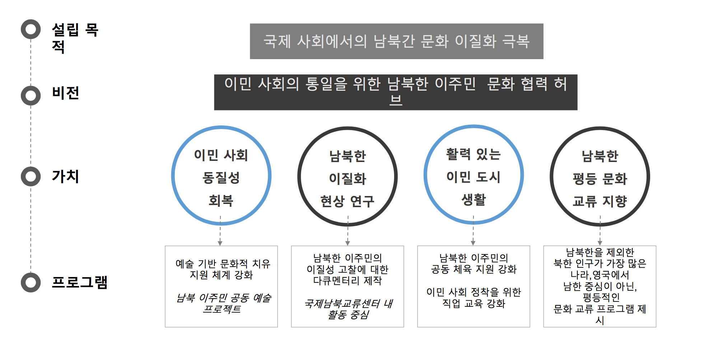

국제남북교류협력센터 소개
인사말 국제 남북 교류 협력 센터를 방문해 주신 여러분을 환영합니다.
국제 남북 교류 협력 센터는 영국에 거주하는 남북한 이주민들의 문화 교류룰 통한 민족의 동질성 회복과 국제 사회 속에서의 통일의 필요성과 인식 향상을 위해 만들어진 비영리 단체로서 영국 내의 남북한 재외 동포 문화, 체육, 예술 생활을 공유할 수 있도록 다양한 문화 교류 프로그램을 담당하고 있습니다.
통일 한국의 준비를 위한 국제 사회 속에서의 초석이 되기 위해 이질화 현상에 대한 학술적인 연구 조사를 바탕으로 남북한 문화 동질성 회복에 최선을 다해 노력 하겠습니다. 감사합니다.
국제 남북교류협력센터 원장 신 문경
원장 약력
경희 대학교 한국어 학사 2004년
경희 대학교 한국어 언어 교육 석사 2006년
University of York Language and Lingusitic Science PhD 2019
국제남북교류협력센터 소개
국제남북교류협력센터는 ‘ 남북한 해외 이주민을 하나로 만든다 ’ 라는 이념
아래
남북한 문화 예술 협력, 이민 사회 정착을 위한 직업 교육, 체육 및 생활 교류
활동을 하는
영국, 런던에 세워진 비영리 재단입니다.
설립 목적 및 비전 핵심 가치
